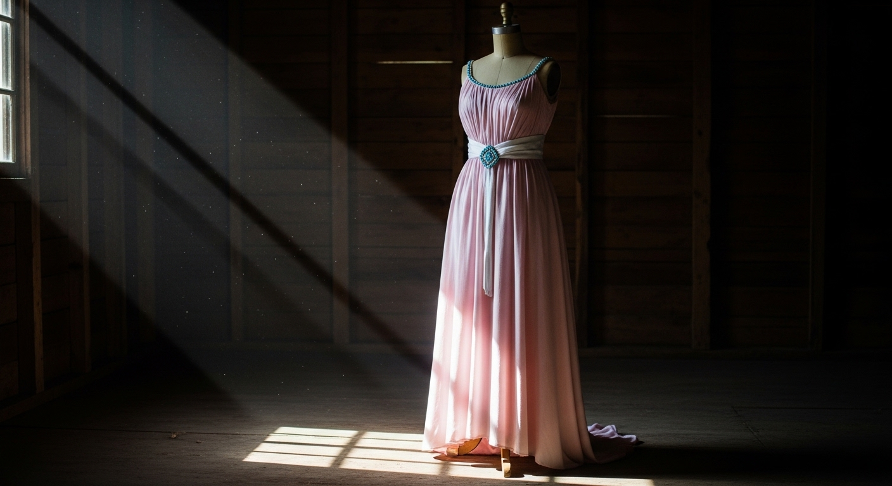
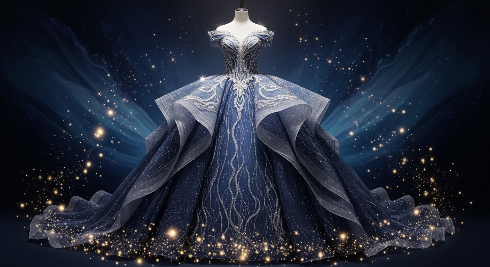

Enchanted Ball Gowns
Step into a world of magic, dreams, and shimmering threads. Explore the exquisite gowns that shaped a destiny and proved that a dream is a wish your heart makes.
The Mice's Masterpiece
Crafted with love, dedication, and a touch of clever resourcefulness by Jaq, Gus, Suzy, Perla, and the loyal bluebirds. Made from a discarded sash and beautiful beads, this charming pink dress represents the pure magic of friendship and the beauty of a hopeful heart.
Though it met a tragic fate at the hands of jealous stepsisters, the love woven into every stitch of this pink gown makes it one of the most precious garments in the kingdom.
The Midnight Silver Gown
Summoned from the stars by the wave of a magic wand. The Fairy Godmother's ultimate creation breathes life into dreams. Woven from starlight, moonbeams, and pure enchantment, this silver masterpiece commands the attention of the entire royal court.
Paired elegantly with delicate opera gloves and the legendary glass slippers, this gown sparkles with an ethereal glow. But remember the warning: the magic only lasts until the final stroke of midnight.